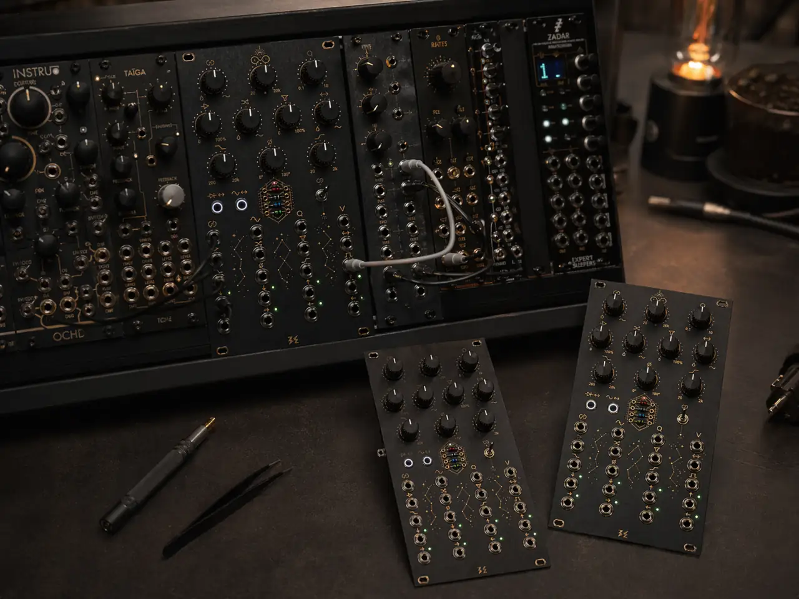
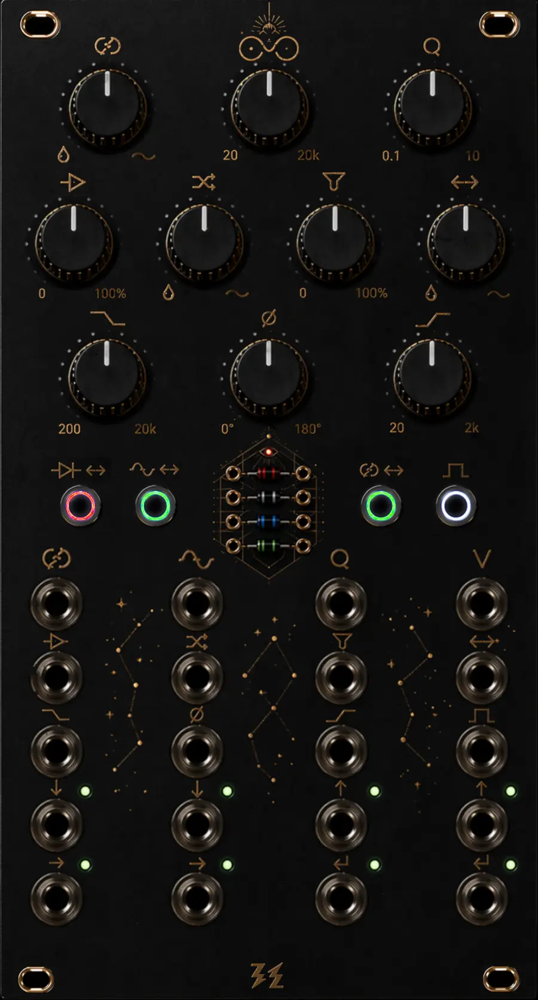

A stereo feedback instrument for Eurorack built around reroutable clipping, SSI2144 filtering, external or internal loop processing, loop-end tone control, and performable switch logic.
OUROBOROS is a compact stereo feedback instrument for Eurorack: reroute the diode clipper or SSI2144 between the main path and the loop, patch external processors through send/return, or let the internal PT2399 delay sustain the loop when nothing is inserted. The Clipper Drive stage is built around a THAT2181 VCA, giving the diode section a more controlled, musically usable drive law than a simple fixed-gain push.
It is designed to feel performable rather than abstract: HP / LP / Phase cleanup keeps feedback playable, switch logic reshapes topology in real time, and the reversible symbol/text panel supports both fast gestural reading and explicit labelled reading.

You patch for texture, instability and recursive motion. OUROBOROS gives you control over where clipping and filtering sit in the loop — so feedback becomes an instrument, not just noise.
You want a living loop with external inserts, internal delay fallback, and real-time topology switching. Send/Return integrates into the feedback path itself — not just as an effect slot.
Push SSI2144 into self-oscillation and OUROBOROS becomes a pitch-tracked synth voice with a resonant core, V/Oct tracking, and the full routing architecture available for further shaping.
OUROBOROS is not only about routing. Its voice comes from where gain is applied, how clipping is entered, where filtering sits in the loop, and how the return path is finally restrained or opened. Those decisions change behaviour as much as tone.
At lower Feedback Mix settings the module can behave less like a wild feedback unit and more like a stereo reinforcement stage: width, density and mild harmonic motion without immediate runaway.
Move the clipper into the loop and let the THAT2181-driven drive stage feed the diode section harder. The result is not just more distortion, but a different feedback growth curve.
When SSI2144 lives inside the loop, Freq, Q, V/Oct and Filter Drive stop being only front-end tone controls. They become orbit controls for the loop's own spectral behaviour.
Without an external S/R processor, the PT2399 fallback prevents the architecture from collapsing into a dead insert point. The module still moves, breathes and reacts as a self-contained loop instrument.
Click a block in the diagram to inspect what it does in the current topology.

This section reads like a compact operating guide: short press, long press, trigger assignment, and delay behavior. It describes the current product concept rather than an outdated implementation.
Short press moves the clipper between the main path and the loop. Long press assigns the global trigger input to SW1.
Short press moves the SSI2144 section between the main path and the loop. Long press assigns the global trigger input to SW2.
Short press changes the macro topology: LOOP versus SERIES. In LOOP mode, the phase block returns into the crossfader wet input. In SERIES mode, the feedback loop is broken and the return chain ends at the output.
Short press sends a tap-tempo event. Long press assigns the global trigger input to SW4. Extra-long press toggles the internal delay on or off.
Not just what can be connected, but how the module tends to react when pushed, opened up, damped, or left to circulate on its own.
Feedback Mix can act like a threshold control between subtle stereo enlargement and true recursive behaviour. With loop-end HP and LP in place, the module can sit in a sweet spot where width, density and motion build up without instantly collapsing into chaos.
Push the SSI2144 into self-oscillation and OUROBOROS stops reading like a processor in the usual sense. The module begins behaving like a non-trivial synthesizer voice: a resonant core with stable V/Oct behaviour, a clean sine-like foundation, and further shaping available through the clipper path, loop-end cleanup and the rest of the routing architecture.
SEND / RETURN does not just add another effect slot. It becomes part of the instrument’s topology: reverb, resonator, pitch shift, extra distortion or whatever else you want to make the loop behave like a changing system rather than a fixed processor chain.
If nothing is patched into SEND / RETURN, the architecture does not fall flat. The internal PT2399 path can keep the loop alive and moving, so the module still behaves like a self-contained instrument rather than a half-empty routing shell.
A compact reference block for architecture, front-panel controls, and the current I/O concept.
Stereo analog feedback instrument with input crossfade, switchable clipper and SSI2144 placement, external or internal loop processing, post-loop LP/HP/Phase cleanup, and MCU-assisted switch logic.
Analog identity highlights: THAT2181-based Clipper Drive front end, diode clipping stage, SSI2144 filter core, and PT2399 internal fallback delay.
Feedback Mix, SSI2144 Freq, SSI2144 Q, Clipper Drive, Clipper Mix, Filter Drive, S/R Mix, LP Freq, Phase, HP Freq, four illuminated switches, and diode socket.
Important analog detail: the Clipper Drive stage uses a THAT2181 VCA front end before the diode section, which is central to the module's gain behaviour and touch response.
CV/control: Feedback Mix CV, SSI2144 Freq CV, SSI2144 Q CV, V/Oct, Clipper Drive CV, Clipper Mix CV, Filter Drive CV, S/R Mix CV, LP Freq CV, Phase CV, HP Freq CV, Trigger In. Audio: Input L/R, Output L/R, Send L/R, Return L/R.
OUROBOROS is built in small, direct runs. Leave your email and you'll be contacted personally when the first batch is ready — pricing, availability, and timeline go straight to the list before anywhere else.
No payment now. Just your email — we'll reach out directly when the batch is confirmed.